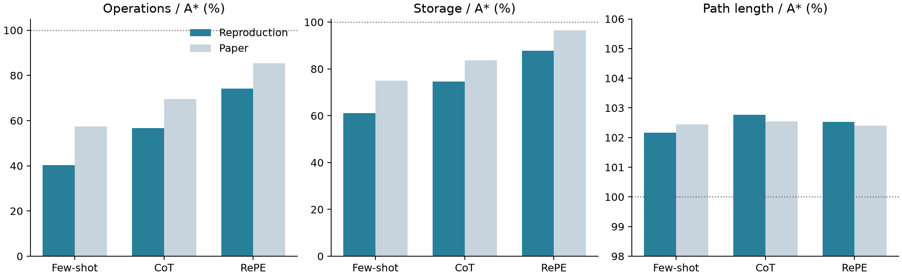
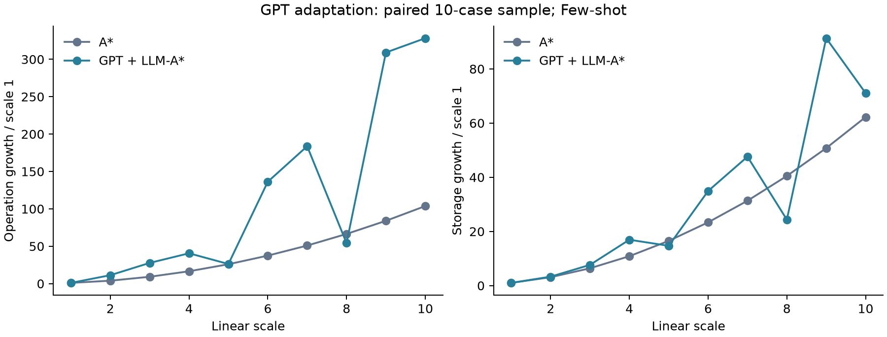
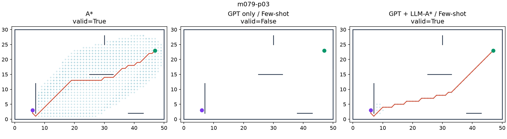
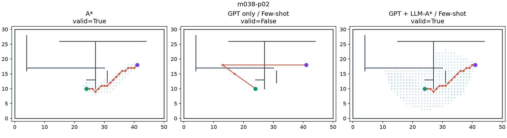
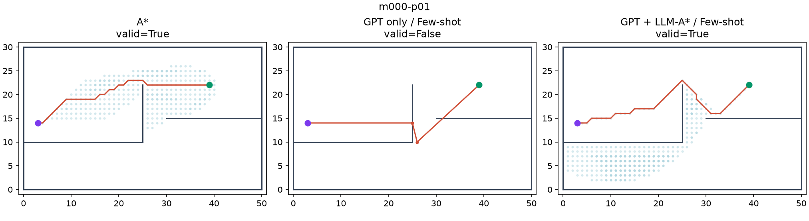

상태: 본 실험 1,000문제·8조건 완료. 이 보고서는 완료된 GPT 기반 8개 조건을 다룹니다.
요청 모델 gpt-3.5-turbo-0125, 반환 모델 gpt-3.5-turbo-0125. temperature=0, max_tokens=1000, 프롬프트당 1회 생성. Few-shot 5-shot, CoT/RePE 3-shot. 동일 응답을 GPT 단독 및 LLM-A*에 공유했습니다. 학습·파인튜닝은 수행하지 않았습니다.
저자 데이터 100개 지도 × 10개 시작·목표 쌍 = 1,000문제. 범위 [0,51]×[0,31]은 저자 코드에 따라 경계 좌표 0~50, 0~30으로 해석했습니다. 8방향 이동과 유클리드 비용, 경계 접촉·장애물 선분 교차를 충돌로 처리했습니다.
저장소 고정 커밋: 9414ed894d774f71c36e8c0afd0e20e6033b95b1. 요청·응답·사용량·요청 ID·프롬프트 해시를 저장했습니다.
각 셀의 큰 숫자는 이번 결과, 작은 숫자는 논문 값입니다. 연산·저장·길이는 문제별 A* 대비 비율의 기하평균입니다. 길이의 주 통계는 유효 경로만 포함합니다. CSV에는 파싱 가능한 모든 경로의 길이 통계와 각 분모도 함께 제공합니다. 논문의 실패 경로 길이 집계 규칙은 명확하지 않아 직접 수치 비교에 한계가 있습니다.
| 조건 | Operation % ↓ | Storage % ↓ | Length % ↓ | Valid % ↑ | 유효 경로 |
|---|---|---|---|---|---|
| A* | 100.00논문 100.00 | 100.00논문 100.00 | 100.00논문 100.00 | 100.00논문 100.00 | 1000/1000 |
| Dynamic weighted A* (reconstructed) | 60.90논문 60.91 | 78.52논문 78.53 | 100.24논문 100.24 | 100.00논문 100.00 | 1000/1000 |
| GPT onlyFew-shot | —논문 — | —논문 — | 106.97논문 119.38 | 6.90논문 12.80 | 69/1000 |
| GPT onlyCoT | —논문 — | —논문 — | 131.10논문 151.73 | 11.00논문 15.20 | 110/1000 |
| GPT onlyRePE | —논문 — | —논문 — | 168.00논문 183.87 | 11.40논문 7.80 | 114/1000 |
| GPT + LLM-A*Few-shot | 40.29논문 57.39 | 61.20논문 74.96 | 102.17논문 102.44 | 100.00논문 100.00 | 1000/1000 |
| GPT + LLM-A*CoT | 56.62논문 69.50 | 74.64논문 83.65 | 102.77논문 102.54 | 100.00논문 100.00 | 1000/1000 |
| GPT + LLM-A*RePE | 74.10논문 85.47 | 87.78논문 96.53 | 102.53논문 102.41 | 100.00논문 100.00 | 1000/1000 |
Few-shot 결합은 A* 대비 연산량 40.29%, 저장량 61.20%, 경로 길이 102.17%, 유효 경로 100.00%였습니다. 탐색량 감소와 경로 길이의 소폭 증가라는 경향은 관찰됐지만, 모델·생성 설정 차이가 있어 논문 수치의 완전한 일치로 해석하지 않습니다.

Few-shot: 경로 목록 추출 실패 187/1000건; CoT: 경로 목록 추출 실패 1/1000건; RePE: 경로 목록 추출 실패 6/1000건. GPT가 실제로 가능한 문제에 “No path found”라고 답한 경우도 포함합니다. 본 실험에서 출력 상한으로 종료된 응답은 6건이며, 그대로 보존하고 다시 생성하지 않았습니다.
시작·목표만 남은 경유점 목록의 수: {"Few-shot": 508, "CoT": 95, "RePE": 39}. 파싱 실패 외에 필터링이나 GPT가 시작·목표만 생성한 경우도 포함합니다. GPT의 경유점 없이 g+2h만 사용한 추가 비교군은 연산량 34.32%, 저장량 56.23%, 경로 길이 102.02%, 유효 경로 100.00%였습니다. 이 비교군은 논문 Table 1에 없는 진단용 실험이며 추가 API 호출 없이 실행했습니다. 따라서 A* 대비 효율 향상을 전부 GPT의 경유점 품질에 귀속하지 않습니다.
저자 데이터에 예시와 정확히 겹치는 문제 5개가 있습니다: m000-p00, m002-p00, m003-p00, m004-p00, m005-p00. 원본 1,000개를 유지한 주 실험 외에 세 프롬프트에서 이 문제들의 합집합을 공통으로 제외했습니다.
| 조건 | Operation % ↓ | Storage % ↓ | Length % ↓ | Valid % ↑ | 유효 경로 |
|---|---|---|---|---|---|
| A* | 100.00논문 100.00 | 100.00논문 100.00 | 100.00논문 100.00 | 100.00논문 100.00 | 995/995 |
| Dynamic weighted A* (reconstructed) | 60.84논문 60.91 | 78.48논문 78.53 | 100.24논문 100.24 | 100.00논문 100.00 | 995/995 |
| GPT onlyFew-shot | —논문 — | —논문 — | 107.65논문 119.38 | 6.53논문 12.80 | 65/995 |
| GPT onlyCoT | —논문 — | —논문 — | 131.89논문 151.73 | 10.85논문 15.20 | 108/995 |
| GPT onlyRePE | —논문 — | —논문 — | 170.63논문 183.87 | 11.16논문 7.80 | 111/995 |
| GPT + LLM-A*Few-shot | 40.29논문 57.39 | 61.20논문 74.96 | 102.17논문 102.44 | 100.00논문 100.00 | 995/995 |
| GPT + LLM-A*CoT | 56.60논문 69.50 | 74.66논문 83.65 | 102.78논문 102.54 | 100.00논문 100.00 | 995/995 |
| GPT + LLM-A*RePE | 74.30논문 85.47 | 87.94논문 96.53 | 102.54논문 102.41 | 100.00논문 100.00 | 995/995 |
본 평가와 분리한 합성 문제 10개로 검증했습니다. 예비 실험 결과로 평가 데이터의 프롬프트 내용을 튜닝하지 않았습니다.
| 조건 | Operation % ↓ | Storage % ↓ | Length % ↓ | Valid % ↑ | 유효 경로 |
|---|---|---|---|---|---|
| A* | 100.00논문 100.00 | 100.00논문 100.00 | 100.00논문 100.00 | 100.00논문 100.00 | 10/10 |
| Dynamic weighted A* (reconstructed) | 16.86논문 60.91 | 49.08논문 78.53 | 100.00논문 100.24 | 100.00논문 100.00 | 10/10 |
| GPT onlyFew-shot | —논문 — | —논문 — | 104.66논문 119.38 | 30.00논문 12.80 | 3/10 |
| GPT onlyCoT | —논문 — | —논문 — | 92.72논문 151.73 | 20.00논문 15.20 | 2/10 |
| GPT onlyRePE | —논문 — | —논문 — | 94.25논문 183.87 | 20.00논문 7.80 | 2/10 |
| GPT + LLM-A*Few-shot | 15.33논문 57.39 | 46.95논문 74.96 | 101.43논문 102.44 | 100.00논문 100.00 | 10/10 |
| GPT + LLM-A*CoT | 10.98논문 69.50 | 41.15논문 83.65 | 100.35논문 102.54 | 100.00논문 100.00 | 10/10 |
| GPT + LLM-A*RePE | 10.67논문 85.47 | 40.80논문 96.53 | 100.21논문 102.41 | 100.00논문 100.00 | 10/10 |
논문 Figure 3의 Llama 실험을 GPT로 변경한 보조 실험입니다. 고정 시드 240702511로 원본 문제 10개를 선택하고 같은 문제를 1~10배 좌표 확대했습니다. 각 문제의 규모 1 대비 증가율을 계산해 산술평균했습니다. 원문의 정확한 샘플·확대 절차는 제공되지 않아 프로토콜을 명시한 재구성입니다.
규모 10에서 규모 1 대비 연산량 증가율은 A* 103.74배, GPT LLM-A* 328.21배였습니다. 이번 GPT 조건에서는 논문의 거의 선형적인 확장성 경향을 재현하지 못했습니다. 각 알고리즘 자신의 규모 1을 분모로 한 수치이므로 두 증가율의 비율을 같은 규모에서의 절대 연산량 비율로 해석하면 안 됩니다.

Few-shot 기준 연산량 비율의 최솟값·최댓값 사례 및 GPT 단독 실패 사례를 자동 선택했습니다. 파란 점은 탐색 상태, 빨간 선은 경로, 초록 점은 출발점, 보라 점은 목표점입니다. 대표성 있는 무작위 표본으로 해석하지 않습니다.



{
"pilot": {
"requests": 30,
"prompt_tokens": 22830,
"completion_tokens": 3530,
"finish_reasons": {
"stop": 30
},
"returned_models": [
"gpt-3.5-turbo-0125"
],
"estimated_usd": 0.01671
},
"main": {
"requests": 3000,
"prompt_tokens": 2367240,
"completion_tokens": 471410,
"finish_reasons": {
"stop": 2993,
"length": 6,
"content_filter": 1
},
"returned_models": [
"gpt-3.5-turbo-0125"
],
"estimated_usd": 1.8907349999999998
},
"scaling": {
"requests": 100,
"prompt_tokens": 59060,
"completion_tokens": 1630,
"finish_reasons": {
"stop": 100
},
"returned_models": [
"gpt-3.5-turbo-0125"
],
"estimated_usd": 0.031975
}
}
추정 비용은 입력 $0.50/백만 토큰, 출력 $1.50/백만 토큰으로 계산했습니다. 예비 실험·본 실험·확장성·줄바꿈 비교를 포함하며 실제 청구 내역은 아닙니다. 키는 산출물에 저장하지 않습니다.
저자 A*·LLM-A*와 15개 문제씩 연산·저장·경로 길이 일치, 20개 문제의 A*와 Dijkstra 최단거리 일치, 3,000회 기하 충돌 비교 및 퇴화 선분·파싱·경로 검증 테스트를 수행했습니다. 상세 실행 절차는 프로젝트 README를 참고하십시오.